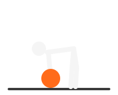
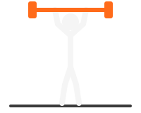

Pour chaque programme : les exercices en vidéo, le nombre de séries et de répétitions, le temps de repos et un conseil d'exécution. Les jours d'entraînement sont dans le planning.
Remise en forme
Niveau : débutant
3 séances par semaine
30 min par séance
Un programme pour reprendre le sport en douceur, sans matériel, à faire chez soi.
Squats3 × 12 · repos 60 sDos droit, talons au sol, descends comme pour t'asseoir.Pompes sur les genoux3 × 10 · repos 60 sMains sous les épaules, corps aligné des genoux à la tête.Fentes avant3 × 10 par jambe · repos 60 sLe genou avant reste au-dessus de la cheville.Gainage3 × 30 s · repos 45 sVentre serré, ne laisse pas tomber les hanches.Jumping jacks3 × 30 s · repos 45 sSaute en écartant bras et jambes, puis reviens.Pont fessier3 × 15 · repos 60 sPousse dans les talons et serre les fessiers en haut.
Cardio découverte
Niveau : débutant
3 séances par semaine
30 à 40 min par séance
Améliorer son souffle et commencer à perdre du poids avec des efforts modérés.
Marche rapide30 minUn rythme où tu peux parler, mais pas chanter.Vélo35 minVélo ou vélo d'appartement, à allure régulière.Montées de genoux4 × 30 s · repos 30 sMonte les genoux à hauteur de hanche, bras actifs.Gainage3 × 30 s · repos 45 sVentre serré, ne laisse pas tomber les hanches.
Perte de poids
Niveau : intermédiaire
4 séances par semaine
40 min par séance
Un mélange de cardio et de renforcement musculaire pour brûler plus de calories.
Burpees4 × 10 · repos 45 sSquat, planche, retour en squat, puis saut bras en l'air.Squats sautés4 × 12 · repos 45 sAtterris en douceur sur l'avant des pieds.

Course à pied30 minCommence lentement, accélère sur les 10 dernières minutes.Pompes4 × 12 · repos 60 sDescends la poitrine près du sol, coudes vers l'arrière.Mountain climbers4 × 30 s · repos 30 sRamène les genoux vers la poitrine, l'un après l'autre.HIIT (effort / repos)8 × (40 s / 20 s)40 s d'effort intense, 20 s de repos : utilise le chronomètre de la page Outils.
Prise de masse
Niveau : intermédiaire
4 séances par semaine
45 min par séance
Une musculation progressive : on augmente la charge petit à petit pour gagner en force et en volume.
Développé couché4 × 8 · repos 90 sDescends la barre jusqu'à la poitrine, pieds bien au sol.Rowing haltère4 × 10 · repos 90 sDos plat, tire le coude vers l'arrière.Squat avec charge4 × 8 · repos 2 minMême technique que le squat, avec une charge modérée au début.

Soulevé de terre jambes tendues3 × 10 · repos 90 sHanches vers l'arrière, la barre glisse le long des jambes.

Développé militaire4 × 10 · repos 90 sGaine le ventre, ne cambre pas le bas du dos.Tractions4 × 6 à 8 · repos 2 minMonte le menton au-dessus de la barre, sans élan.